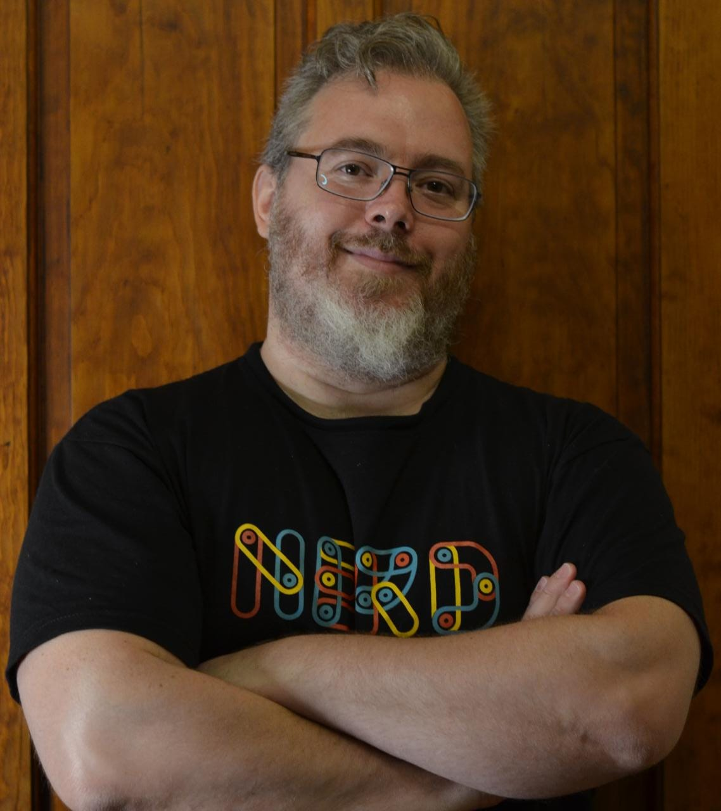

About Me

I am a SRE/Sysadmin with more than 20 years in experience working with Linux servers, on-premise in the old days and in cloud VMs more recently. I consider myself as a friendly and well tempered guy that prefers to work as a part of a team rather than alone.
I am used to learn about new technologies as a way to improve my craft and performance, usually I find fun and enjoyment on carrying some small DIY projects that allows me to improve in my professional life. In the last months I built a small robot using Arduino boards, a Kubernetes cluster on Raspberry Pi and another cluster in a bare metal server following Kelsey Hightower's Kubernetes The Hard Way. You can check on my personal projects section for more on this.
Personal Projects
Since I was a boy I enjoyed fixing (and sometimes breaking) stuff around me. As I grew up I started focusing on IT and in my teen years my mother got my first Desktop PC (wich lasted about a whole month until I dissasemble it). That was my entry point to this fascinating world of making things work and then not work and finally make them work again.
My ongoing projects are:
Bare Metal k8s Cluster (The hard way)
This is the project I spent most time recently. Some weeks ago with my good friend Alejandra figured out it was going to be a great experience to deploy a Kubernetes cluster on a spare desktop PC I built with spare parts I had at home (see photo above :-P).
So we started installing host OS (Debian 11.4) and created 6 VMs using QEMU and KVM. This was the layout:
- 3 VMs as controllers
- 3 VM as workers
- 1 VM as controllers Load Balancer
We followed Kelsey Hightower's Kubernetes The Hard Way as well as Drew Viles Kubernetes The Hard Way on bare metal/VMs guides. We encountered some roadbumps but I think we can say the task was somewhat straightforward.
Once we had our cluster working we started configuring everything needed to get a propper functional deployment. As Load Balancer we installed MetalLB and after that we installed a Persistent Volume Claim using NFS. Once we got everything in place we deployed PiHole as LAN DNS. That's how I got rid of almost all ads on my devices. I will elaborate on a future post on how to do it.
What did we got from this?
First of all, the satisfaction of doing something cool just because we can. Also we got a deeper understanding on how kubernetes networking work on pods, nodes and services level. Also we got a deeper understanding on how the PVC/StorageClasses/Provisioner works as a whole and the roles and clusterroles needed to implement them. Also we got a lot of experience troubleshooting real problems on a real cluster.
Arduino Robot
This is by far the most frustrating personal project I ever did (thus the whiskey glass). It started as a way to learn C/++, but the issues I found later made me go in other directions.
I built the chassis and mounted the boards and motors. I did the wiring later and used an old PC power unit to save some money on batteries. It has a MPU6050 gyroscope and two stepper motors for movement. The idea is that the robot stays vertical balancing itself on two wheels. All the testing were fine and I started to write the PID code for the movement when something started to fail in a very stranger way. I suspect the motor wiring is not thick enough to transport all the current needed for the steppers. In the next weeks I will upload the code to github and give it another shoot. I learned a lot about electronics trying to figure out this and I got to do some C++ coding also.
This is not over yet. I will keep on trying with this little guy
Raspi K8s Cluster
This is my first approach to a k8s clustewr on my own. I got this set of 4 raspi4 boards on sale last year and the first thing I did was to install kubernetes on them. There is one master node and three workers.
I use this cluster as a "test" environment where I can try things without risk of break anything on the configuration on my home network. I also intend to use it as an easy to move cluster since I travel a lot with my wife. This way I always have my test environment at hand.
Work Experience
Personal Data
Date of birth: Dec 4th. 1979
Age: 42 Years old
Birthplace: La Plata, Argentina
Languages
Spanish: Native
English: Advanced (written and spoken)
Academic History
Tecnologic National University (La Plata Faculty)
Finished: Systems Analyst. G.P.A.: 7,08
Ongoing: Systems Engineer: Courses finished. Final Tests 43/45
Technologies
GNU/Linux: Advanced
Filesystems and storage: Advanced
Python Scripting: Medium-Advanced
Bash Scripting: Advanced
Networking: Advanced
Docker: Advanced
Kubernetes: Medium-Advanced
Github: Medium
Ansible: Medium
Terraform: Basic
GCP: Basic
Work Experience
Exabeam: NOC Engineer (Dec 2020 - Aug 2021)
NOC engineer: I was responsible of monitoring all the SaaS client environments and take proactive actions when needed. Also I was responsible of upgrading the environment to a newer version when released. In case of an unexpected issue in any of the environments I was the one to execute the first troubleshooting and try to figure out what was the issue. If the solution was out of my reach my role was to raise a Level3 ticket, notify the client and do the follow up afterwards.
Accenture: DevOps Engineer/Infrastructure Sr. Eng. (2018-2020)
DevOps Engineer: In containers Engineering team I worked on defining and maintaining the standard container base images that are to be consumed by internal Accenture teams to deploy their applications. I also worked developing and maintaining the IaaC terraform modules used to deploy the infrastructure and services on GKE. It was also my responsibility to provide support and assist teams on their effort to move to containers. Providing them good practices and advice on how to move from an on-premise or virtualized server install to containers. I also helped App teams on creation of CI/CD pipelines on Azure DevOps.
Infrastructure Sr. Engineer: my main role is to define the infrastructure that the Company Internal Operations (CIO) will use to deploy their applications. I worked on defining the standard images, services and procedures on how to deploy Linux Servers (and the services that will run on it) on the company environments (AWS, Azure and on-premise datacenters using Vmware Vsphere virtualization)
Water Resource Authority of the Buenos Aires Province (2000-2018)
Internal ticketing system Admin: My tasks where to analyze different solutions and implement an installation of the selected one. GLPI was the selected one. Once GLPI was installed, I configured and integrated with Autoridad del Agua's user databases and software. An expansion as a second stage is was planned in order to give support to internal users (mainly IT). Were also part of my tasks to give internal courses to GLPI users.
Hardware and Software requirements analyst (S.M.A.T. Project): S.M.A.T. stands for Early Alert and Monitoring System. The Buenos Aires Province will measure, monitor, control and model several hydric basins in the province's territory. The S.M.A.T. will have a Datacenter located in the Autoridad del Agua administrative building. This datacenter will host the databases and BI software that will allow to make meteorologic predictions and early alerts in case of an extraordinary atmospheric event. As requirement analyst my job was to define the necessary hardware and software to achieve the desired solution. Also is my job was to identify possible problems in the proposed solution by the contractor and being proactive in finding and defining a viable solution inside the Project specifications. I also was responsible in co-design with the contractor the solutions we may find for each problem encountered.
Internal tech support: Technical Support in an 12 workstations environment running MS Windows and MS Office. Firewalls and servers administration when Sysadmin in charge went vacations or sick leaves. During year 2005 Windows 2000 PDC Server Administration tasks were performed.
Smart Bridge S.R.L.: IT Manager (2009 - 2016)
IT and Communications Manager: IT role was created when this start-up company experienced a quick growth and thus, a dedicated area for technology and information systems was needed.Three servers were configured and deployed. The hardware used was two clone PC's and one Dell PowerEdge 2650 Server.
One PC had the firewall implemented with IPTables in Linux (Debian) and in the other one acting as backup server with Bacula. In the Dell server was configured as a virtual machine host with XEN (Dom-0). Those VM acted as e-mail server (exim4), file server NFS4, LDAP (OpenLDAP) and web server (Apache2, later migrated to Nginx). There was also an OpenVPN server which managed all the Point to Point connections with the different company branches and the notebooks acting as road warriors. All VPN links were encrypted with 1024 bits SSL keys. This allowed to have an unified network, working online in all the three offices.
Seven workstations were migrated from MS Windows to Debian GNU/Linux with OpenOffice.
Additionally a Biometric Time&Attendance Control System was implemented in the offices at La Plata Harbor. Security cameras where also installed.
Tecnologic National University (La Plata Faculty) (2003-2005)
Non-graduate intern: Assistant Instructor of courses and workshops.
Justice sector, Buenos Aires Province: Instructor (2002)
GNU/Linux courses teacher: Creator of content and instructor of training courses for using GNU/Linux servers in the SuSE Linux migration context by the Justice Sector in Buenos Aires Province. Syllabus was : IPTables Firewalls (design and implementation), Server configuration and administration: webserver (Apache 2), e-mail (exim4) , DHCP, NFS and Samba as PDC.
OCCAM S.A.: SysAdmin/Instructor (2000 - 2002)
SysAdmin: Configuation, deploy, maintenance and administration in 3 GNU/Linux Servers (Mandrake, RedHat and Debian distros) which had Fileserver (NFS, SMB), email server (exim) and webserver (Apache 1.2) and a SCO/Unix server as database server (Informix) and telephone answering machine via modem.
GNU/Linux courses Instructor: Creator of content and instructor of training courses for using GNU/Linux servers and workstations in Buenos Aires Province Public Administration.
Contact
Feel free to contact me on my social media below :-)